Palette de dessin
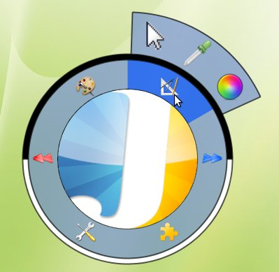
Revenir au curseur standard
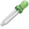
Pipette
Selection de la couleur (Voir)
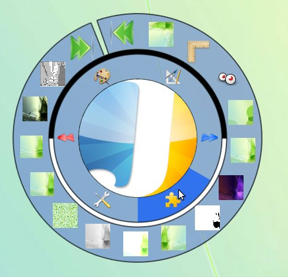
AsciiArt (Voir)
Exagération des détails
Double
Flou / Netteté
Grain
Niveau de gris
Luminosité / Contraste (Voir)
Miroir
Noir et blanc
Inversion des couleurs
Oeil de poisson
Peinture à l'huile
Correction des yeux rouges
Redimensionnement (Voir)
Rotation d'un angle de 90°
Saturation (Voir)
Détection de contour (Sobel)
Teinte
Torsion (Voir)
Vibration
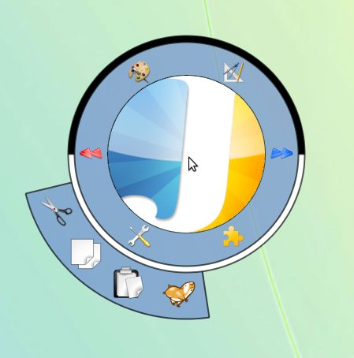
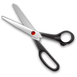
Couper
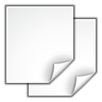
Copier
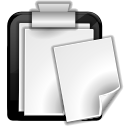
Coller
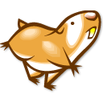
Rogner
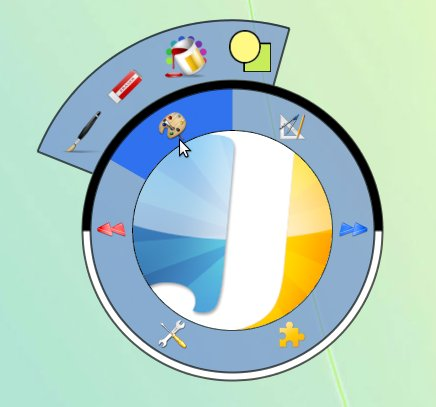
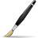
Pinceau (Voir)
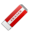
Gomme
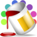
Pot de peinture
Formes géométriques (Voir)
Le sélecteur au centre permet de choisir une couleur
Le sélecteur en demi cercle permet de regler la couleur choisie
Les trois cases contiennent les valeurs rouge, vert, bleu de la couleur choisie
Les deux boutons permettent de choisir la couleur 1 et la couleur 2
Les deux demi cercles autour de la palette représentent la couleur 1 et la couleur 2
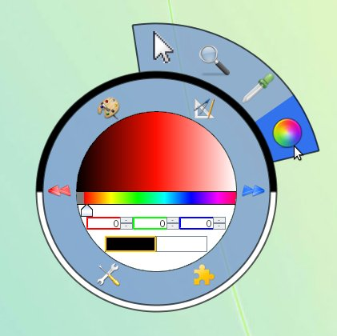
Les 3 icones de la partie supérieure du centre représentent les différentes formes géométriques que l'on peut tracer
Le potentiometre permet de regler la l'épaisseur des bordures des formes
Les 3 icones de la partie inférieure du centre représente un dessin différent de la forme selectionné :
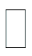
Forme vide
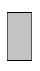
Forme vide à deux couleurs
Forme pleine
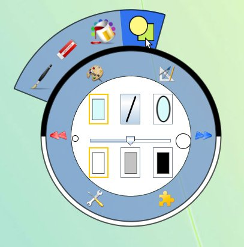
Le potentiometre permet de regler l'épaisseur du pinceau
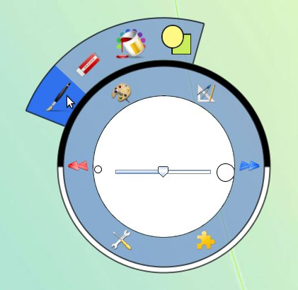